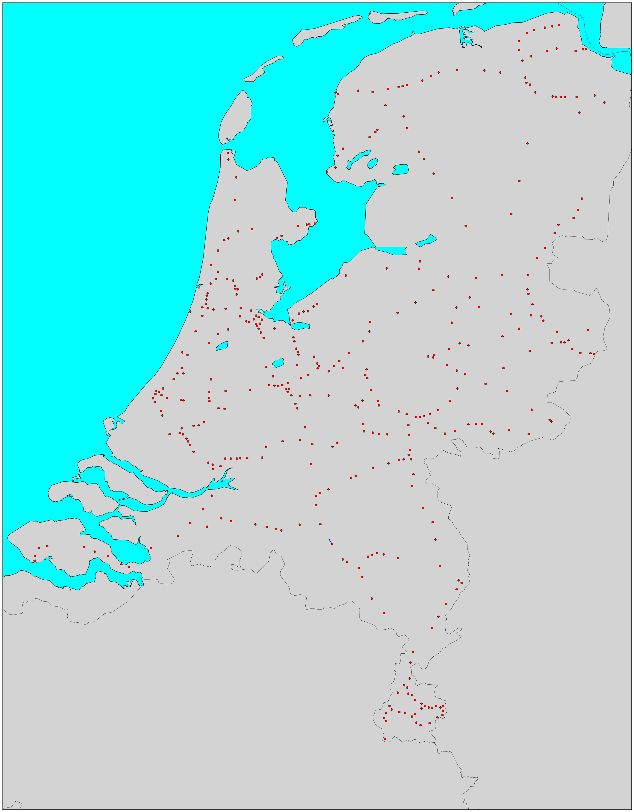

NS (Nederlandse Spoorwege) is the biggest railway operator in the Netherlands. Recently I’ve found out that that they provide API to share data on trains and prices. API is very simple but quite limited.
The current version provides access to:
- current departure times (all departures for the next 60 minutes (at least) per station)
- disruptions
- prices
- list of stations
- travel recommendations
A request is usually a simple GET method. Reply contains an XML. NS API requires credentials which can be obtained after registering at their website. They limit number of requests to 50000 per day per service.
A fun thing to do with such API is try to reconstruct a real-time traffic through a day. Their API does not provide such information but based on departure time on different stations it is possible to interpolate how trains run:
- Map all stations
- Run a crontab script every hour to get departure times at all stations
- Reconstruct how every train moved
- Interpolate train movements between stations
The plan is to make a video of such “real-time” train traffic in the Netherlands.
But for now here is a map of all train stations obtained via NS API: 